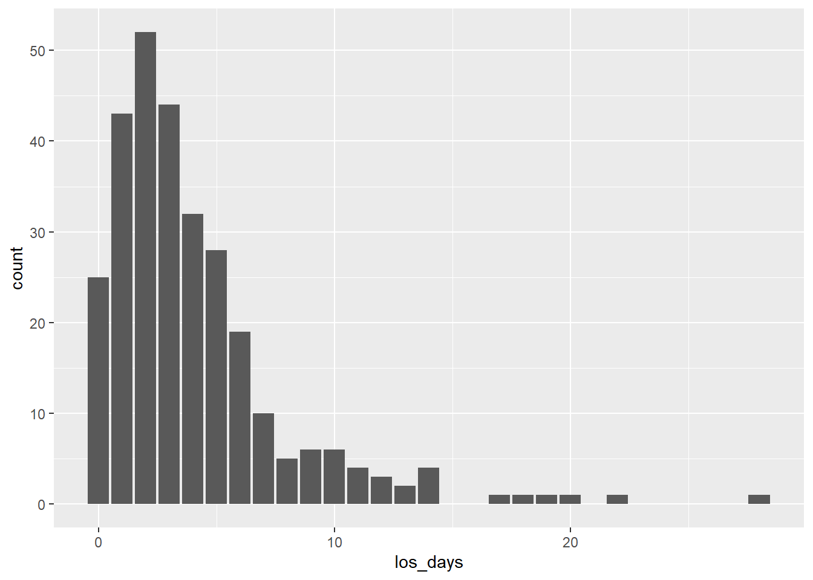

── Conflicts ────────────────────────────────────────── tidyverse_conflicts() ──
✖ dplyr::filter() masks stats::filter()
✖ dplyr::lag() masks stats::lag()
ℹ Use the conflicted package (<http://conflicted.r-lib.org/>) to force all conflicts to become errors
Rows: 1000 Columns: 17
── Column specification ────────────────────────────────────────────────────────
Delimiter: ","
chr (11): patient_id, hospital_id, sex, gender, race, ethnicity, state, pay...
dbl (4): age, total_charges, height, waist
date (2): admission_date, discharge_date
ℹ Use `spec()` to retrieve the full column specification for this data.
ℹ Specify the column types or set `show_col_types = FALSE` to quiet this message.
head(exp_patient)
# A tibble: 6 × 17
patient_id hospital_id age sex gender race ethnicity state payer
<chr> <chr> <dbl> <chr> <chr> <chr> <chr> <chr> <chr>
1 P509866 H02 23 Male Man White Not Hispanic or … PA Comm…
2 P377646 H03 64 Female Woman White Not Hispanic or … TX Comm…
3 P695041 H01 75 Female Woman Asian Not Hispanic or … OH Comm…
4 P656627 H09 57 Female Woman White Not Hispanic or … AZ Medi…
5 P237052 H03 72 Female Woman White Not Hispanic or … TX Medi…
6 P299658 H06 66 Male Man Asian Not Hispanic or … FL Medi…
# ℹ 8 more variables: admission_date <date>, discharge_date <date>,
# discharge_disposition <chr>, icd9 <chr>, icd10 <chr>, total_charges <dbl>,
# height <dbl>, waist <dbl>
NOTE:This data and the patients therein are randomly generated, and not based on any real people. Any patterns that emerge from this data set should not be used to make conclusions or draw patterns about any group or society.
THIS DATA SHOULD ONLY BE USED FOR THE PURPOSE OF LEARNING TO USE R.
Let’s say we’re interested in a sample that only includes our diagnoses categories of interest: cardiovascular and respiratory health issues.
# importing a CSV that has all of the codes I'm interested in keeping for my analytic dataset.icd_codes_cvd_resp <-read_csv("../data/cardiovascular_respiratory_icd_codes.csv")
Rows: 31 Columns: 3
── Column specification ────────────────────────────────────────────────────────
Delimiter: ","
chr (2): code, desc
dbl (1): icd_ver
ℹ Use `spec()` to retrieve the full column specification for this data.
ℹ Specify the column types or set `show_col_types = FALSE` to quiet this message.
# We usually want to have a chunk that imports everything in one place, but I'm keeping it here for illustrative purposes. # Note that if we only had a few ICD codes of interest, we could also manually create this object like this:example_word_obj <-c("hello", "world", "here", "I", "am")# creating an object that stores all the codes I'm interested in for this filtercvd_resp <- (icd_codes_cvd_resp$code)# filtering patient observations that have any numbers I'm interested in in either icd9 or icd10exp_patient_clean <- exp_patient %>%filter(icd9 %in% cvd_resp | icd10 %in% cvd_resp)# Examining exp_patient_clean to make sure it worked and observe changes from original datasetnrow(exp_patient_clean) #289 is expected
[1] 289
head(exp_patient_clean)
# A tibble: 6 × 17
patient_id hospital_id age sex gender race ethnicity state payer
<chr> <chr> <dbl> <chr> <chr> <chr> <chr> <chr> <chr>
1 P159928 H05 69 Female Woman White Not Hispanic or … NY Medi…
2 P449929 H06 75 Female Woman White Not Hispanic or … FL Medi…
3 P261544 H02 56 Male Man White Not Hispanic or … PA Self…
4 P397954 H03 76 Male Man White Not Hispanic or … TX Medi…
5 P608555 H02 69 Male Man White Not Hispanic or … PA Medi…
6 P101558 H01 45 Male Man White Not Hispanic or … OH Self…
# ℹ 8 more variables: admission_date <date>, discharge_date <date>,
# discharge_disposition <chr>, icd9 <chr>, icd10 <chr>, total_charges <dbl>,
# height <dbl>, waist <dbl>
Step 2: Obtaining Length of Stay
Let’s say we’re interested in knowing how long our sample patients were at their respective hospitals before discharge:
# First we need to calculate how long admission was for the patientsexp_patient_clean <- exp_patient_clean %>%mutate(admission_date =as.Date(admission_date),discharge_date =as.Date(discharge_date),los_days =as.numeric(discharge_date - admission_date) )# And then visualizing to see our distribution of losggplot(data = exp_patient_clean,aes(x = los_days)) +geom_bar()

Step 3: Exploring Category Collapsing
Let’s say we’re interested in decreasing the number of race/ethnicity categories and creating a single, race_eth variable.
# First, we can explore the race and ethnicity variablestable(exp_patient_clean$race)
American Indian or Alaska Native
4
Asian
19
Black or African American
41
Native Hawaiian or Other Pacific Islander
2
Some Other Race
24
Two or More Races
9
White
190
table(exp_patient_clean$ethnicity)
Hispanic or Latino Not Hispanic or Latino Unknown
50 222 8
# And see how these categories overlaptable(exp_patient_clean$race, exp_patient_clean$ethnicity)
Hispanic or Latino
American Indian or Alaska Native 1
Asian 1
Black or African American 4
Native Hawaiian or Other Pacific Islander 1
Some Other Race 16
Two or More Races 1
White 26
Not Hispanic or Latino Unknown
American Indian or Alaska Native 2 1
Asian 17 1
Black or African American 35 0
Native Hawaiian or Other Pacific Islander 1 0
Some Other Race 6 0
Two or More Races 8 0
White 153 6
#creating a new variableexp_patient_clean <- exp_patient_clean %>%mutate(race_eth =case_when(# Hispanic or Latino Category ethnicity =="Hispanic or Latino"& (race =="White"| race =="Some Other Race") ~"Hispanic or Latino",# Two Or More Races ethnicity =="Hispanic or Latino"& race !="White"& race !="Some Other Race"~"Two or More Races", race =="Two or More Races"~"Two or More Races",# White (ethnicity !="Hispanic or Latino"|is.na(ethnicity)) & race =="White"~"White",# Black (ethnicity !="Hispanic or Latino"|is.na(ethnicity)) & race =="Black or African American"~"Black or African American",# AIAN & NHPI (ethnicity !="Hispanic or Latino"|is.na(ethnicity)) & (race =="American Indian or Alaska Native"| race =="Native Hawaiian or Other Pacific Islander") ~"AIAN or NHPI",# Asian (ethnicity !="Hispanic or Latino"|is.na(ethnicity)) & race =="Asian"~"Asian",# Other (ethnicity !="Hispanic or Latino"|is.na(ethnicity)) & race =="Some Other Race"~"Other" ) )# Looking at new variabletable(exp_patient_clean$race_eth)
AIAN or NHPI Asian Black or African American
4 18 37
Hispanic or Latino Other Two or More Races
42 8 16
White
164
Step 4: Converting Measurements
Let’s say we’re interested in understanding the overall obesity prevalence in our sample. The dataset includes height and waist circumference in inches, so we can compute the Body Roundness Index (BRI) and collapse it into categories.
# We should first create a continuous variable using the BRI formula# (height and waist are both in inches; the ratio inside the formula is unitless)exp_patient_clean <- exp_patient_clean %>%mutate(BRI_raw =364.2-365.5*sqrt(1- (waist / (2* pi))^2/ (0.5* height)^2),BRI =round(BRI_raw, digits =1) )# Then we should categorize BRI into distinct categories:# very lean, average, overweight, and high central obesityexp_patient_clean <- exp_patient_clean %>%mutate(BRI_cat =case_when( BRI <3.4~"Very Lean", BRI >=3.4& BRI <=5.4~"Average", BRI >=5.5& BRI <6.9~"Overweight", BRI >=6.9~"High Central Obesity" ) )table(exp_patient_clean$BRI_cat)
Average High Central Obesity Overweight
107 79 67
Very Lean
36
Step 5: A New Dataset Enters
Let’s say that, as we’ve been working on this management, we’re given access to a new dataset that uses ICD11 Diagnosis codes.
We’ll want to eventually merge this with our previous data, but first we should take a look at it.
# A tibble: 6 × 19
MRN ENC_ID FAC_CD AGE SEX_CD GENDER_ID RACE_CD ETHNIC_CD PAT_STATE
<chr> <chr> <chr> <chr> <chr> <chr> <chr> <chr> <chr>
1 p394649 ENC100001 08 50 M MAN BLACK Not Hisp… GA
2 293381 ENC100335 03 79 MALE M 1 NHL .
3 MRN481749 ENC100002 FL-SOU… 56 F 2 W NHL FL
4 MRN481749 ENC100003 06 57 F WOMAN WHITE 2 FL
5 827054 ENC100327 H02 17 1 Man WHITE N PA
6 MRN481749 ENC100004 H6 58 F 2 1 N FL
# ℹ 10 more variables: PAYOR_CD <chr>, ADM_DATE <chr>, DSCH_DATE <chr>,
# DSCH_DISP <chr>, DX_SEQ <chr>, DX_POA <chr>, ICD11_CD <chr>, TOT_CHG <chr>,
# HEIGHT <dbl>, WAIST <dbl>
This dataset looks different from the other we’ve been looking at, but seems to get at all the same information more or less. It will need significantly more cleaning than the previous dataset we were working with.
# investigating the dataset for differences# Are there missing values?colSums(is.na(exp_pat_11))
Warning: There was 1 warning in `mutate()`.
ℹ In argument: `age = as.numeric(AGE)`.
Caused by warning:
! NAs introduced by coercion
# state# this one is fine! Just need to rename the variableexp_pat_11 <- exp_pat_11 %>%rename(state = PAT_STATE)# payerexp_pat_11 <- exp_pat_11 %>%mutate(payer =case_when( PAYOR_CD %in%c("MC","MCR","MEDICARE","Medicare","MedCare","1") ~"Medicare", PAYOR_CD %in%c("MD","MCD","MEDICAID","Medicaid","MedCaid","2") ~"Medicaid", PAYOR_CD %in%c("COM","COMM","Commercial","PRIVATE","Priv","BCBS","3") ~"Commercial", PAYOR_CD %in%c("SP","SELF","SELF PAY","Self-pay","Selfpay","4") ~"Self-pay", PAYOR_CD %in%c("OTH","OTHER","Other","Misc","UNK","5") ~"Other/Unknown" ) )# discharge dispositionexp_pat_11 <- exp_pat_11 %>%mutate(discharge_disposition =case_when( DSCH_DISP %in%c("01","1","HOME","Home", "DISCH HOME", "01-Home") ~"Home", DSCH_DISP %in%c("06","6","HHA","HOME HH", "Home w/ HH") ~"Home with home health", DSCH_DISP %in%c("03","3","SNF","Skilled Nursing", "03-SNF") ~"SNF", DSCH_DISP %in%c("02","2","XFER","TRANS", "Transfer") ~"Transfer", DSCH_DISP %in%c("07","7","AMA","LAMA", "Left AMA") ~"AMA", DSCH_DISP %in%c("20","EXP","Expired","Died", "DECEASED", "20-Expired") ~"Expired" ) )# total charges# Already numeric, just needs a rename :)exp_pat_11 <- exp_pat_11 %>%rename(total_charges = TOT_CHG)# height exp_pat_11 <- exp_pat_11 %>%rename(height = HEIGHT)# waistexp_pat_11 <- exp_pat_11 %>%rename(waist = WAIST)# and then we can remove the old, uncleaned versions of the variables we've modifiedclean_exp_pat_11 <- exp_pat_11 %>%select(-SEX_CD,-GENDER_ID,-AGE,-MRN,-ENC_ID,-FAC_CD,-RACE_CD,-PAYOR_CD,-DSCH_DISP )
# admissions and discharges are special cases, since they're in different date formats# admission date# discharge date# ICD11_CD, DX_POA, & DX_SEQ need their own special care too.
# and now we can look at our nicer dataset with well-labeled variables! :)head(clean_exp_pat_11)
# A tibble: 6 × 20
ETHNIC_CD state ADM_DATE DSCH_DATE DX_SEQ DX_POA ICD11_CD total_charges height
<chr> <chr> <chr> <chr> <chr> <chr> <chr> <chr> <dbl>
1 Not Hisp… GA 30/10/2… 10-31-20… 1 U CA401 31948.47 67.4
2 NHL . 15-Feb-… 02/19/20… 3 <NA> 6C40 <NA> 71.8
3 NHL FL 02/26/2… 2021-02-… 2 Y DC50 . 70.2
4 2 FL 44392 2021-07-… 1 Y JB20 29,430.54 70.2
5 N PA 12/17/2… NULL 2 Y 2C6Y . 68
6 N FL 2022-02… 02/09/20… 2 N JB20 <NA> 70.2
# ℹ 11 more variables: waist <dbl>, patient_id <chr>, enc_id <chr>,
# hospital_id <chr>, gender <chr>, sex <chr>, race <chr>, ethnicity <chr>,
# age <dbl>, payer <chr>, discharge_disposition <chr>
It appears that this dataset isn’t yet collapsed so that there’s one row per person. Instead, it appears that each row is a singular visit. We’ll have to collapse so that each row is a unique ID.
#collapsed_pat11 <- clean_exp_pat_11 %>%#group_by(MRN) %>%#summarise(#age = max(as.numeric(AGE), na.rm = TRUE), # We'll be keeping the most recent record of age to represent the patient's most recent clinical state.#)
// Applying all management steps (1-4) on this new dataset?
Finally, we can combine this dataset with our original one.
But wait! There’s a chance that there might be some overlap between patients on bothdatasets. We should check that first.